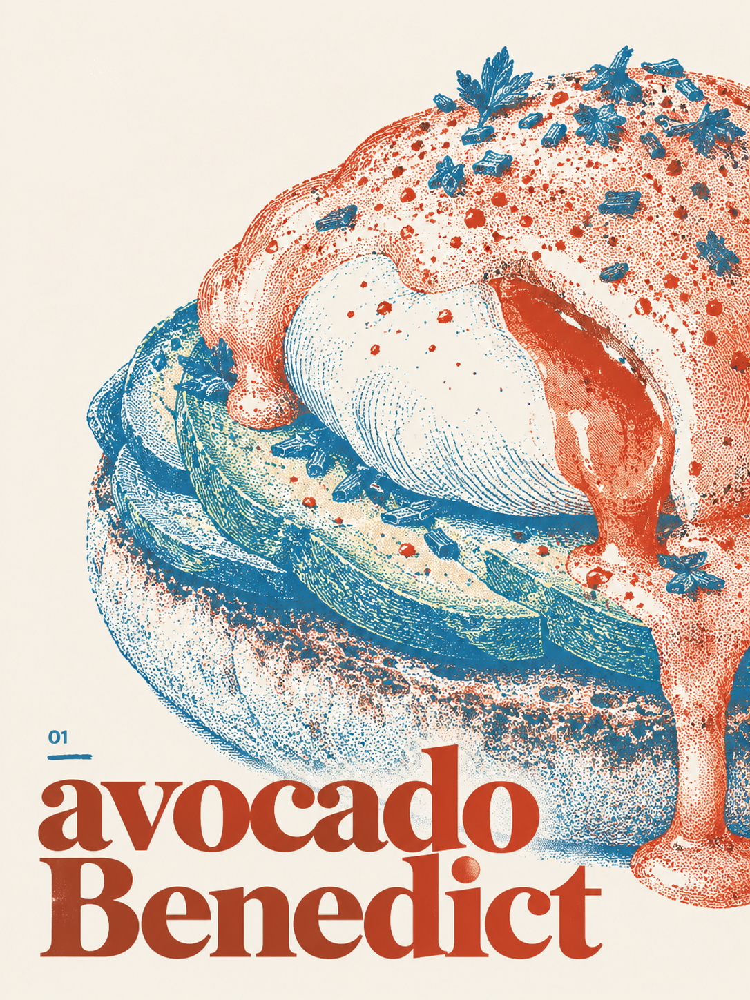
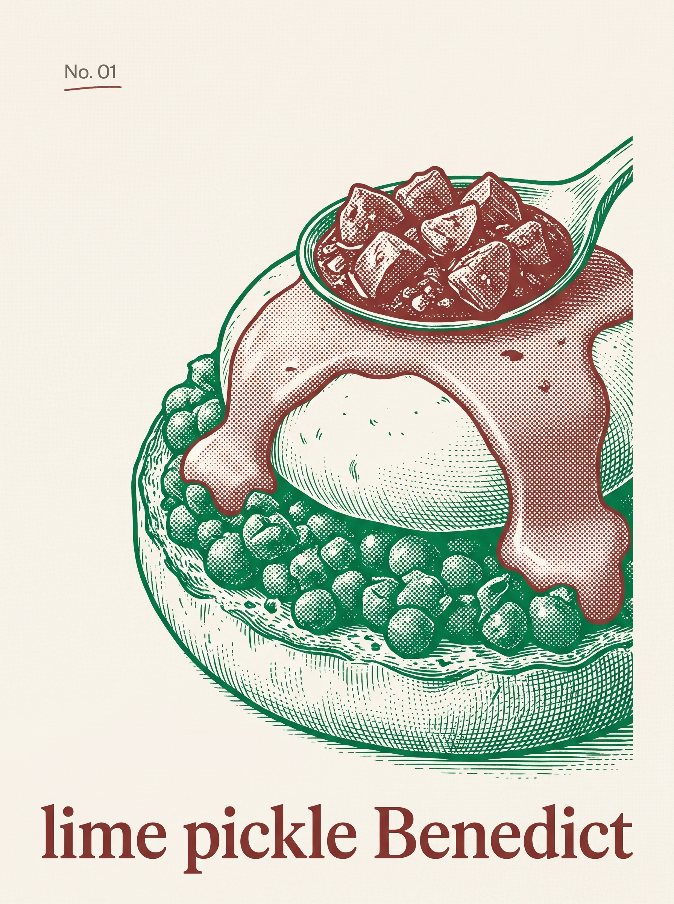

01
Avocado Benedict
Avocado, vegan egg, vegan hollandaise.
VeganUncheck for the CSS 3D experiment. Image inks stay faithful to their generation recipe.
View the asset archive ->Vegetarian food and coffee

Open Heart is a vegetarian place for original plant-based creations. Start with vegan eggs Benedict, stay for the feeling that imagination can become something real, generous, and delicious.
Enter the idea ->A first proof of the idea
Benedict is the first question on the plate. Can something recognisable become strange, generous, and completely worth trying?
We are interested in the moment when an idea becomes sensory: a sauce, a texture, a warm plate passed across a table. The menu is a place to test that feeling.
See the working menu ->
Working menu
Avocado, vegan egg, vegan hollandaise.
VeganLime pickle, crushed spiced peas, vegan egg, coriander hollandaise.
VeganChipotle mayo, charred corn, black beans, vegan egg, lime.
VeganPlant-based salmon, open-faced.
VeganPulled mushrooms, sharp slaw, BBQ sauce.
VeganAvocado, mango, parsley, raisins.
VeganCrisp leaves, croutons, creamy vegan Caesar dressing.
VeganLentils, chickpeas, edamame, toasted seeds, lemon dressing.
VeganBreaded cauliflower, BBQ sauce.
VeganCrisp potatoes, salt. Choose your sauce.
VeganChilli-dusted potatoes. Choose your sauce.
VeganPotatoes, rosemary, salt. Choose your sauce.
VeganA sharp lime filling, avocado, crisp crumb base.
VeganStrawberries, mascarpone cream, crumble.
Vegetarian / vegan version in developmentCrackly caramel, soft vanilla custard.
Vegan / recipe in developmentWhisked matcha.
Plant milk availableRoasted Japanese green tea.
Plant milk availableSmall, dark, concentrated.
VeganEspresso, steamed milk, soft foam.
Plant milk availableLondon fog: Earl Grey, vanilla, honey, milk.
Vegetarian / vegan option without honeyCoffee, whipped cream.
Plant-based cream option in developmentThick, hot drinking chocolate.
Vegan version in developmentBeer with a licorice note.
Recipe in developmentAlcohol-free, lime, spice, a salted rim.
0,0 / recipe in developmentA Copenhagen point of view
Maybe near the water. Maybe on a neighborhood street. The exact room is an open question. The feeling is more specific: paper on the wall, something warm in the cup, a table where an unusual idea can be passed around.
These are visual studies for the mood, not a claim about an address.


Visit prototype
The page can hold the practical information before the real information exists. These are placeholders for the future room.
Open Heart is still becoming. The useful next step is to find the plates, words, and room that make the idea feel true.
Start again ->